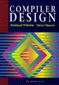

| See Also |
| flexdoc.1,
by Vern Paxson. 1995. This is the definitive reference on flex. Written by the author of flex, it is part of the flex distribution. The manual includes both tutorial and reference sections and is of great help for novice and experienced programmers. The documentation of gelex is based on this manual. |
|
| Lex
- Lexical Analyzer Generator, by M. E. Lesk, E.
Schmidt. Bell Laboratories, 1975. This paper was certainly the first reference manual describing lex, a tool which has been initially designed and implemented under Unix by the authors to simplify interfacing with yacc. It's interesting to see that the specification of lex didn't change that much over the years. |
|
 |
Flex, The Lexical Scanner
Generator, by G. T. Nicol. Free Software Foundation,
1993. ISBN 1-882114-21-3. The flex manual (edition 1.03) provided by the Free Software Foundation covers flex 2.3.7. Although out of date, this is a good reference manual for programmers familiar with the common problems in lexical analysis and compiler design. |
 |
Lex
& Yacc, second edition, by J. R.
Levin, T. Mason, D. Brown. O'Reilly
& Associates, Inc., 1992. ISBN 1-56592-000-7. This book is both a reference manual for lex and yacc with a thorough description of the various flavors of these tools, and a tutorial with well-written examples explained in details. |
 |
Compilers:
Principles, Techniques, and Tools, by
A. V. Aho, R. Sethi, J. D. Ullman. Addison-Wesley, 1986.
ISBN 0-201-10088-6. The classic compiler text, also known as the Dragon Book because of its cover. It includes detailed discussions of the theory behind lexical analysis along with sketches of possible implementations (see chapter 3, page 83). |
|  | Compiler
Design, by R. Wilhelm, D. Maurer. Addison-Wesley, 1995.
ISBN 0-201-42290-5. This book provides a comprehensive, modern approach to the design and construction of compilers, with a chapter devoted to lexical analysis (see chapter 7, page 235). |
 |
Mastering
Regular Expressions, by J. E.F. Friedl.
O'Reilly & Associates,
Inc., 1997. ISBN 1-56592-257-3. Everything you wanted to know about regular expressions can be found in this excellent book. There can be certain subtle but valuable ways to think when using regular expressions. In the book the author leads you through the steps of knowing exactly how to craft a regular expression to get the job done. |
The Eiffel Archive contains many links to Eiffel libraries sorted by category.
Object Tools developed Eiffel wrappers and support for Eiffel/S that allow Flex and Bison to be used for the generation of lexical analyzers and parsers using Eiffel under MS-DOS. This package is distributed under the GNU GPL license and includes the DOS versions of Flex and Bison. This package can be downloaded here.
Pirmin Kalberer ported the above package to ISE Eiffel 3. The flex distribution can be downloaded from Pirmin's Flex for Eiffel page.
ISE's EiffelLex library provides a set of object-oriented mechanisms for lexical analysis, based on several kinds of finite automata, deterministic and non-deterministic. However the scanner specification is done in Eiffel, which is quite cumbersome, and the automata are built at run-time making the execution rather slow.
Epg: an Eiffel Parser Generator is a wrapper and supporting classes to use standard Unix tools to generate Eiffel parsers. Epg is a freeware developed by Christoph Zenger. This package requires lex/yacc/sed etc. and works with Eiffel/S 1.3. More information about epg, including downloading instructions, can be found at the Eiffel Archive.
Bruce Wielinga wrote an Eiffel wraper around the GNU rx library. This allows one to do regular expression matching in SmartEiffel. This package can be downloaded here.
Gelex has been written in Eiffel after reverse-engineering the flex utility (version 2.5.2) contributed to Berkeley by Vern Paxson. The C source code of the flex utility can be downloaded from GitHub.
|
Copyright © 1999-2005, Eric
Bezault mailto:ericb@gobosoft.com http://www.gobosoft.com Last Updated: 23 February 2005 |